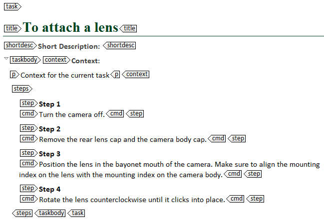

---
# Generated from DITA source
layout: default
title: "Writing the steps: <step> and <cmd>"
index: "../toc.html"
---
Writing the steps: <step> and <cmd>
Whether you use ordered or unordered steps in your task, you always have to insert a <step> element for each step. In each <step> element, you have to include a <cmd> element with the actual command of that step.

When writing steps and commands, take into account the following guidelines:
Use imperative sentences in all your steps. Instead of "You can turn on the light by flipping the switch", for example, write "Turn on the light by flipping the switch" or "Flip the switch to turn on the light".
Write one step per significant action and combine simple steps. You can, for example, combine "Choose File" and "Choose New" to "Choose File > New.
Do not include too many steps in your task (Miller's law). If a task requires more then nine or ten steps, divide it into two or more separate task topics.